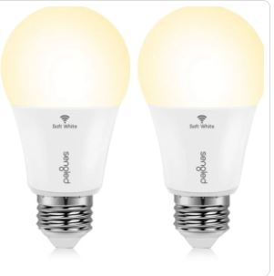
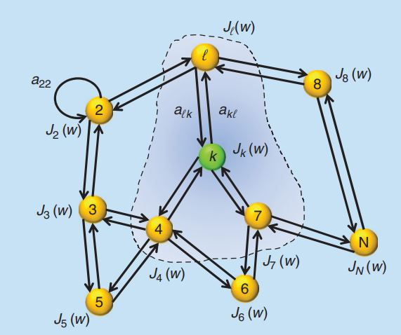
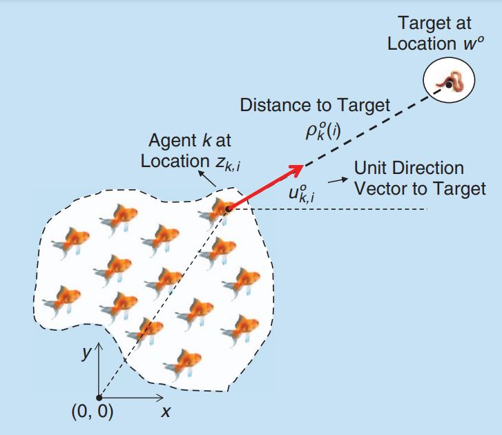
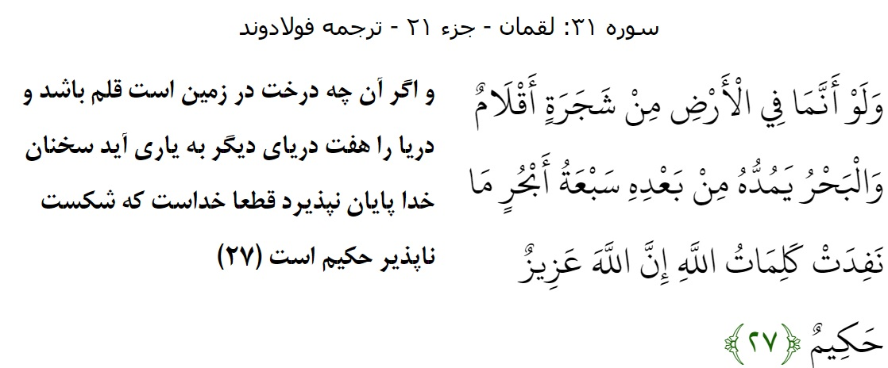
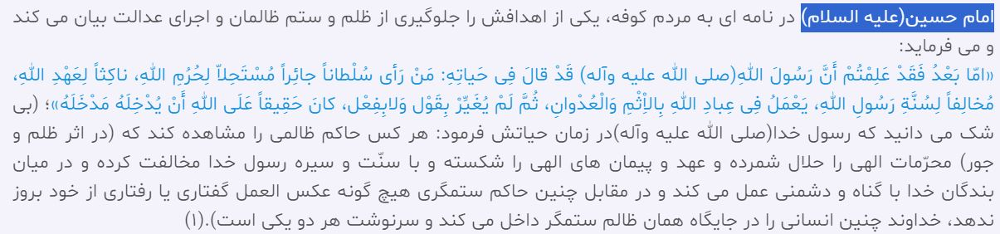

AI Essentials: Applications Across Fields#
AI Definintion No.1#
Artificial Intelligence (AI) is a branch of science that aims to create machines and systems capable of performing tasks that typically require human intelligence.
Weak AI :#
AI systems that are designed and trained to perform specific tasks and cannot perform tasks outside their designated functions
Examples 1- Google Home: A home that takes care of tasks, lights your way, and knows how to help. Controlling smart home devices
Some Features:#
LED Light Bulb: Dimmable, Voice compatible, 18$

Freezer Refrigerator: Remotely Monitor And Control With Home Connect App, $7,999.00
(General AI) Strong AI :#
Hypothetical AI systems that can understand, learn, and handle many different tasks like humans can. General AI doesn’t exist yet and is something researchers aim to create in the future.
Level 1: Its hardware is fixed, but most of its software can be designed.
Level 2: It can design its own hardware and software.
In Amazon site AGI systems: Efforts to build AGI systems are ongoing and encouraged by emerging developments.
Deep learning , Generative AI, NLP, Computer vision, Robotics, …
Challenges in AGI#
Make connections : Current AI models are limited to their specific domain and make connections between domains is difficult !!.
Emotional intelligence : Creativity requires emotional thinking
Sensory perception: Interacting physically with the external environment, including perceiving shapes, colors, tastes, smells, and sounds, as well as engaging in various tasks.
AI Definintion No.2#
A Comprehensive Social Perspective with Focus on Human Relationships AI not only impacts various aspects of individual life but also focuses on modeling and analyzing social interactions and relationships to predict human behavior.
Human Relationships#

These phenomena are often studied in fields such as
Social network modeling
swarm intelligence
collective dynamics
toward brain modeling
They can be modeled using AI and computational techniques to understand and predict group behavior.
Target localization#

Understanding Customer Behavior Through Group Modeling#
Organizations can create more effective ways to connect with customer
Control election strategies#
Generating messages for intelligent control of social groups
Predicting Voting Patterns: Models can forecast how different groups might vote based on past behavior and current trends. This allows campaigns to focus their efforts on key swing areas or undecided voters.
Swarm of Drones#
A swarm of drones for attack involves complex AI algorithms and techniques inspired by natural swarm behaviors.
News by the Enemy Iran fired ‘massive swarm’ of drones, cruise missiles and ballistic missiles towards Israel
Environmental surveillance and monitoring using drone swarms#
Agriculture
Crowd Management
Forest Management
Pollution Detection
Smart Cities
Conclusion#
Why We Are Excited About AI & AGI#
AGI is a step towards reaching a higher state of understanding. Just as God is the ultimate Creator, artificial general intelligence (AGI) represents a form of creation.
Thus, it can be seen that AGI seeks to emulate the Creator and tries to achieve a divine-like level of intelligence.

The Role of Intelligence in Civilization
Human intelligence has created all the wonderful things in our world.
This figure was generated by AI (Text to Image).
By boosting our abilities with artificial intelligence, we can make life even better.
Potential Benefits
Even small improvements in AI can bring big changes in science and technology.
These changes can help reduce accidents, diseases, injustice, wars, and poverty.
